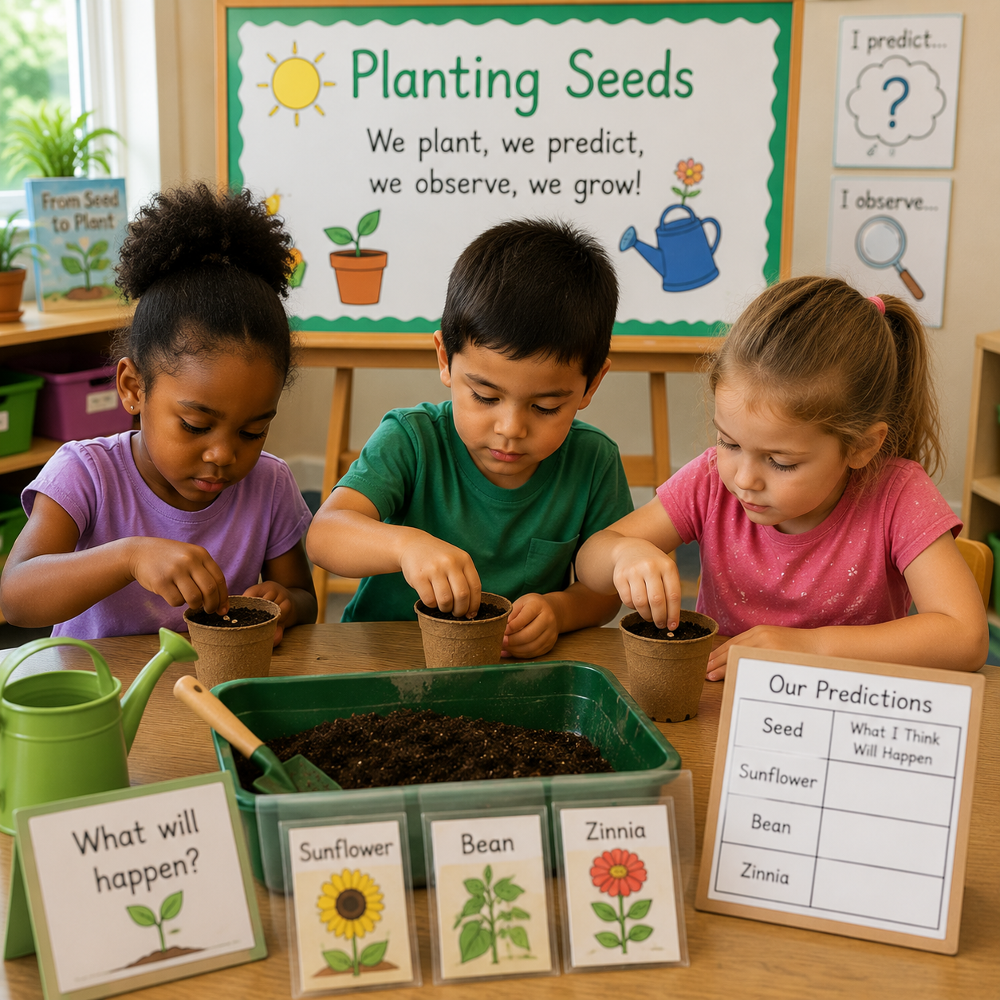
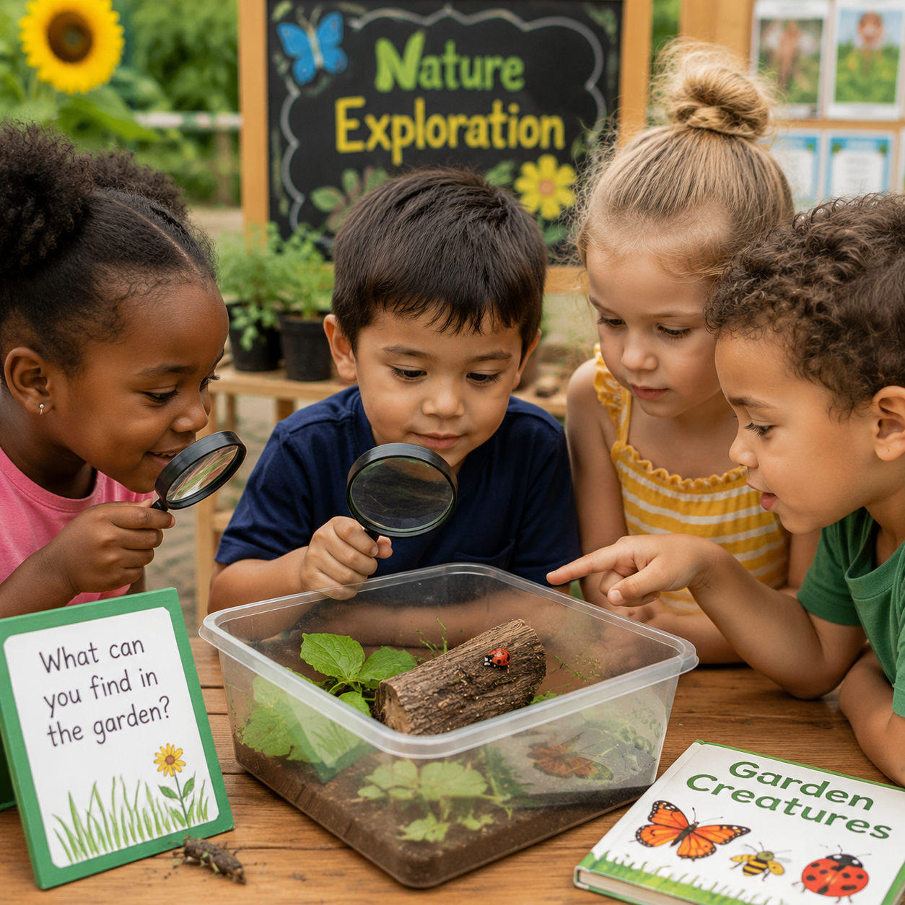

Science
Planting Seeds
Children plant seeds, make predictions, and observe what happens as plants begin to grow.
Explore Activity →Children discover the wonder of growing plants through hands-on gardening experiences. This study encourages scientific thinking, observation, responsibility, measurement, literacy, creativity, and environmental awareness as children explore seeds, soil, plants, insects, and the natural world.

Gardening provides meaningful opportunities for children to investigate living things, make predictions, observe changes, care for plants, and understand how nature works. Through planting, measuring, and exploring, children build curiosity and confidence.
Activities
Learning Centers
STEM Challenges
Printable Resources
Open ended questions encourage children to investigate, predict, observe, and communicate their discoveries throughout the Gardening Study.
Children explore what plants need to survive including sunlight, water, soil, and care.
Children practice careful observation by noticing changes in seeds, roots, leaves, and flowers.
Children discover relationships between plants, insects, animals, people, and the environment.
Children strengthen skills across science, literacy, mathematics, creativity, and social emotional development.
Observe, predict, experiment, and record changes in living things.
Build vocabulary through books, discussions, journals, and storytelling.
Measure plants, count seeds, compare sizes, and explore patterns.
Develop independence by caring for plants and classroom gardens.
Important words help children communicate their observations and scientific thinking.
A small part of a plant that can grow into a new plant.
The part of the plant that absorbs water and helps it stay in the soil.
Energy from the sun that helps plants grow.
A resource plants need to survive and grow.
Simple materials encourage exploration, creativity, investigation, and hands-on learning throughout the Gardening Study.
Explore different types of seeds and compare size, shape, texture, and growth.
Use cups, pots, or recycled containers for planting classroom gardens.
Children practice responsibility using child sized tools for digging and planting.
Magnifying glasses, journals, and measuring tools support scientific discovery.
Children learn through hands-on experiments, observations, conversations, and creative exploration.

Children plant seeds, make predictions, and observe what happens as plants begin to grow.
Explore Activity →
Children measure plants, compare changes, and record growth over time.
Explore Activity →
Children investigate insects and discover how living things interact in a garden.
Explore Activity →Each week children build deeper understanding through planting, observation, experimentation, and reflection.

Resources designed to support planning, documentation, classroom discussions, and meaningful gardening experiences.
Children record plant growth, changes, predictions, and discoveries through drawings and writing.
Use nonfiction and fiction books to build vocabulary and encourage scientific conversations.
Capture learning through photographs, child quotes, observations, and classroom displays.
Ready to use resources that support classroom investigations and children's discoveries.
Families can continue gardening exploration at home by planting flowers, growing vegetables, observing insects, taking nature walks, cooking with fresh foods, and talking about how plants grow. Everyday experiences help children build curiosity, responsibility, and a connection with the natural world.
Explore Family Engagement →{kind=link}
{kind=link}
{kind=link}
{kind=link}